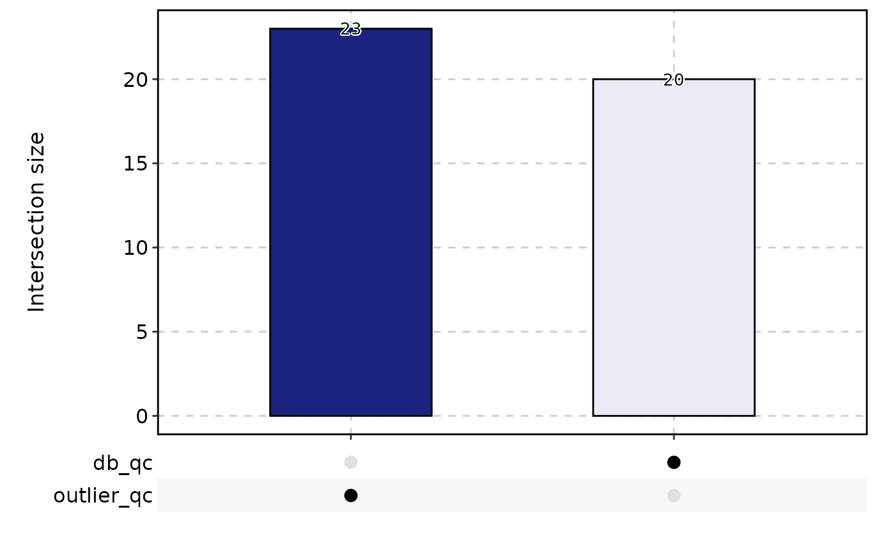
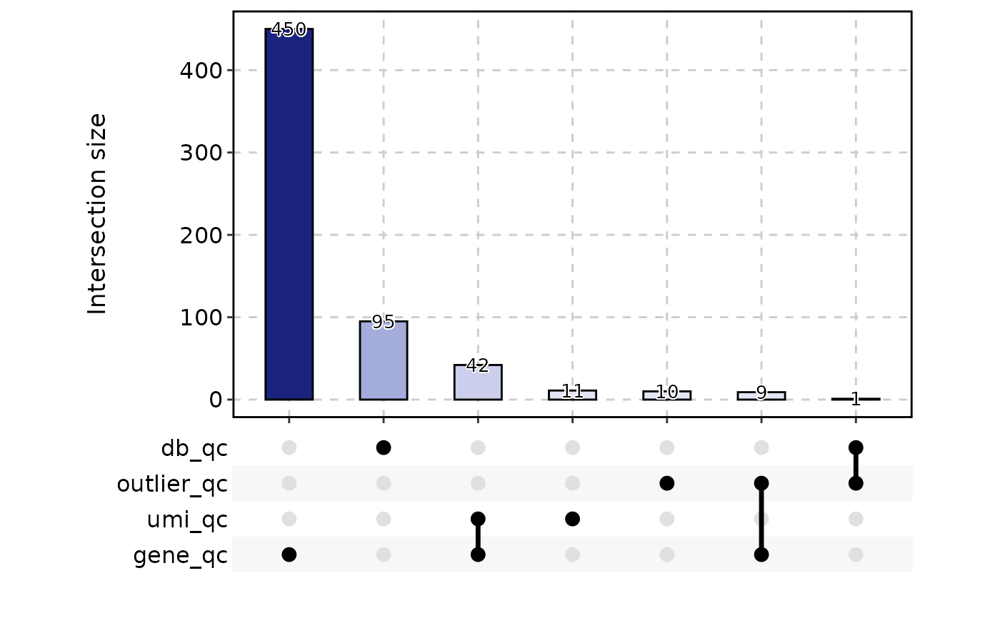

This function handles multiple quality control methods for single-cell RNA-seq data.
Usage
RunCellQC(
srt,
assay = "RNA",
split.by = NULL,
return_filtered = FALSE,
qc_metrics = c("doublets", "outlier", "umi", "gene", "mito", "ribo", "ribo_mito_ratio",
"species"),
db_method = "scDblFinder",
db_rate = NULL,
db_coefficient = 0.01,
outlier_threshold = c("log10_nCount:lower:2.5", "log10_nCount:higher:5",
"log10_nFeature:lower:2.5", "log10_nFeature:higher:5", "featurecount_dist:lower:2.5"),
outlier_n = 1,
UMI_threshold = 3000,
gene_threshold = 1000,
mito_threshold = 20,
mito_pattern = c("MT-", "Mt-", "mt-"),
mito_gene = NULL,
ribo_threshold = 50,
ribo_pattern = c("RP[SL]\\d+\\w{0,1}\\d*$", "Rp[sl]\\d+\\w{0,1}\\d*$",
"rp[sl]\\d+\\w{0,1}\\d*$"),
ribo_gene = NULL,
ribo_mito_ratio_range = c(1, Inf),
species = NULL,
species_gene_prefix = NULL,
species_percent = 95,
seed = 11
)Arguments
- srt
A Seurat object.
- assay
The name of the assay to be used for doublet-calling. Default is
"RNA".- split.by
Name of the sample variable to split the Seurat object. Default is
NULL.- return_filtered
Logical indicating whether to return a cell-filtered Seurat object. Default is
FALSE.- qc_metrics
A character vector specifying the quality control metrics to be applied. Default is
c("doublets", "outlier", "umi", "gene", "mito", "ribo", "ribo_mito_ratio", "species").- db_method
Method used for doublet-calling. Can be one of
"scDblFinder","Scrublet","DoubletDetection","scds_cxds","scds_bcds","scds_hybrid".- db_rate
The expected doublet rate. Default is calculated as
ncol(srt) / 1000 * 0.01.- db_coefficient
The coefficient used to calculate the doublet rate. Default is
0.01. Doublet rate is calculated asncol(srt) / 1000 * db_coefficient.- outlier_threshold
A character vector specifying the outlier threshold. Default is
c("log10_nCount:lower:2.5", "log10_nCount:higher:5", "log10_nFeature:lower:2.5", "log10_nFeature:higher:5", "featurecount_dist:lower:2.5"). See scuttle::isOutlier.- outlier_n
Minimum number of outlier metrics that meet the conditions for determining outlier cells. Default is
1.- UMI_threshold
UMI number threshold. Cells that exceed this threshold will be considered as kept. Default is
3000.- gene_threshold
Gene number threshold. Cells that exceed this threshold will be considered as kept. Default is
1000.- mito_threshold
Percentage of UMI counts of mitochondrial genes. Cells that exceed this threshold will be considered as discarded. Default is
20.- mito_pattern
Regex patterns to match the mitochondrial genes. Default is
c("MT-", "Mt-", "mt-").- mito_gene
A defined mitochondrial genes. If features provided, will ignore the
mito_patternmatching. Default isNULL.- ribo_threshold
Percentage of UMI counts of ribosomal genes. Cells that exceed this threshold will be considered as discarded. Default is
50.- ribo_pattern
Regex patterns to match the ribosomal genes. Default is
c("RP[SL]\\d+\\w{0,1}\\d*$", "Rp[sl]\\d+\\w{0,1}\\d*$", "rp[sl]\\d+\\w{0,1}\\d*$").- ribo_gene
A defined ribosomal genes. If features provided, will ignore the
ribo_patternmatching. Default isNULL.- ribo_mito_ratio_range
A numeric vector specifying the range of ribosomal/mitochondrial gene expression ratios for ribo_mito_ratio outlier cells. Default is
c(1, Inf).- species
Species used as the suffix of the QC metrics. The first is the species of interest. Default is
NULL.- species_gene_prefix
Species gene prefix used to calculate QC metrics for each species. Default is
NULL.- species_percent
Percentage of UMI counts of the first species. Cells that exceed this threshold will be considered as kept. Default is
95.- seed
Set a random seed. Default is
11.
Examples
data(pancreas_sub)
pancreas_sub <- standard_scop(pancreas_sub)
#> ℹ [2025-10-25 05:46:31] Start standard scop workflow...
#> ℹ [2025-10-25 05:46:31] Checking a list of <Seurat> object...
#> ! [2025-10-25 05:46:32] Data 1/1 of the `srt_list` is "unknown"
#> ℹ [2025-10-25 05:46:32] Perform `NormalizeData()` with `normalization.method = 'LogNormalize'` on the data 1/1 of the `srt_list`...
#> ℹ [2025-10-25 05:46:34] Perform `Seurat::FindVariableFeatures()` on the data 1/1 of the `srt_list`...
#> ℹ [2025-10-25 05:46:34] Use the separate HVF from srt_list
#> ℹ [2025-10-25 05:46:34] Number of available HVF: 2000
#> ℹ [2025-10-25 05:46:34] Finished check
#> ℹ [2025-10-25 05:46:35] Perform `Seurat::ScaleData()`
#> ℹ [2025-10-25 05:46:35] Perform pca linear dimension reduction
#> StandardPC_ 1
#> Positive: Aplp1, Cpe, Gnas, Fam183b, Map1b, Hmgn3, Pcsk1n, Chga, Tuba1a, Bex2
#> Syt13, Isl1, 1700086L19Rik, Pax6, Chgb, Scgn, Rbp4, Scg3, Gch1, Camk2n1
#> Cryba2, Pcsk2, Pyy, Tspan7, Mafb, Hist3h2ba, Dbpht2, Abcc8, Rap1b, Slc38a5
#> Negative: Spp1, Anxa2, Sparc, Dbi, 1700011H14Rik, Wfdc2, Gsta3, Adamts1, Clu, Mgst1
#> Bicc1, Ldha, Vim, Cldn3, Cyr61, Rps2, Mt1, Ptn, Phgdh, Nudt19
#> Smtnl2, Smco4, Habp2, Mt2, Col18a1, Rpl12, Galk1, Cldn10, Acot1, Ccnd1
#> StandardPC_ 2
#> Positive: Rbp4, Tagln2, Tuba1b, Fkbp2, Pyy, Pcsk2, Iapp, Tmem27, Meis2, Tubb4b
#> Pcsk1n, Dbpht2, Rap1b, Dynll1, Tubb2a, Sdf2l1, Scgn, 1700086L19Rik, Scg2, Abcc8
#> Atp1b1, Hspa5, Fam183b, Papss2, Slc38a5, Scg3, Mageh1, Tspan7, Ppp1r1a, Ociad2
#> Negative: Neurog3, Btbd17, Gadd45a, Ppp1r14a, Neurod2, Sox4, Smarcd2, Mdk, Pax4, Btg2
#> Sult2b1, Hes6, Grasp, Igfbpl1, Gpx2, Cbfa2t3, Foxa3, Shf, Mfng, Tmsb4x
#> Amotl2, Gdpd1, Cdc14b, Epb42, Rcor2, Cotl1, Upk3bl, Rbfox3, Cldn6, Cer1
#> StandardPC_ 3
#> Positive: Nusap1, Top2a, Birc5, Aurkb, Cdca8, Pbk, Mki67, Tpx2, Plk1, Ccnb1
#> 2810417H13Rik, Incenp, Cenpf, Ccna2, Prc1, Racgap1, Cdk1, Aurka, Cdca3, Hmmr
#> Spc24, Kif23, Sgol1, Cenpe, Cdc20, Hist1h1b, Cdca2, Mxd3, Kif22, Ska1
#> Negative: Anxa5, Pdzk1ip1, Acot1, Tpm1, Anxa2, Dcdc2a, Capg, Sparc, Ttr, Pamr1
#> Clu, Cxcl12, Ndrg2, Hnf1aos1, Gas6, Gsta3, Krt18, Ces1d, Atp1b1, Muc1
#> Hhex, Acadm, Spp1, Enpp2, Bcl2l14, Sat1, Smtnl2, 1700011H14Rik, Tgm2, Fam159a
#> StandardPC_ 4
#> Positive: Glud1, Tm4sf4, Akr1c19, Cldn4, Runx1t1, Fev, Pou3f4, Gm43861, Pgrmc1, Arx
#> Cd200, Lrpprc, Hmgn3, Ppp1r14c, Pam, Etv1, Tsc22d1, Slc25a5, Akap17b, Pgf
#> Fam43a, Emb, Jun, Krt8, Dnajc12, Mid1ip1, Ids, Rgs17, Uchl1, Alcam
#> Negative: Ins2, Ins1, Ppp1r1a, Nnat, Calr, Sytl4, Sdf2l1, Iapp, Pdia6, Mapt
#> G6pc2, C2cd4b, Npy, Gng12, P2ry1, Ero1lb, Adra2a, Papss2, Arhgap36, Fam151a
#> Dlk1, Creld2, Gip, Tmem215, Gm27033, Cntfr, Prss53, C2cd4a, Lyve1, Ociad2
#> StandardPC_ 5
#> Positive: Pdx1, Nkx6-1, Npepl1, Cldn4, Cryba2, Fev, Jun, Chgb, Gng12, Adra2a
#> Mnx1, Sytl4, Pdk3, Gm27033, Nnat, Chga, Ins2, 1110012L19Rik, Enho, Krt7
#> Mlxipl, Tmsb10, Flrt1, Pax4, Tubb3, Prrg2, Gars, Frzb, BC023829, Gm2694
#> Negative: Irx2, Irx1, Gcg, Ctxn2, Tmem27, Ctsz, Tmsb15l, Nap1l5, Pou6f2, Gria2
#> Ghrl, Peg10, Smarca1, Arx, Lrpap1, Rgs4, Ttr, Gast, Tmsb15b2, Serpina1b
#> Slc16a10, Wnk3, Ly6e, Auts2, Sct, Arg1, Dusp10, Sphkap, Dock11, Edn3
#> ℹ [2025-10-25 05:46:36] Perform `Seurat::FindClusters()` with louvain and `cluster_resolution` = 0.6
#> ℹ [2025-10-25 05:46:36] Reorder clusters...
#> ℹ [2025-10-25 05:46:36] Perform umap nonlinear dimension reduction
#> ℹ [2025-10-25 05:46:36] Non-linear dimensionality reduction (umap) using (Standardpca) dims (1-50) as input
#> ℹ [2025-10-25 05:46:36] UMAP will return its model
#> ℹ [2025-10-25 05:46:40] Non-linear dimensionality reduction (umap) using (Standardpca) dims (1-50) as input
#> ℹ [2025-10-25 05:46:40] UMAP will return its model
#> ✔ [2025-10-25 05:46:44] Run scop standard workflow done
pancreas_sub <- RunCellQC(pancreas_sub)
#> ℹ [2025-10-25 05:46:44] Data type is raw counts
#> ℹ [2025-10-25 05:46:45] Data type is raw counts
#> ℹ [2025-10-25 05:46:45] Data type is raw counts
#> ℹ [2025-10-25 05:46:45] Installing: scDblFinder...
#>
#> → Will install 46 packages.
#> → Will download 1 CRAN package (14.98 kB), cached: 45 (0 B).
#> + BiocIO 1.18.0 [bld]
#> + BiocNeighbors 2.2.0 [bld][cmp]
#> + BiocSingular 1.24.0 [bld][cmp]
#> + Cairo 1.6-5 + ✔ libcairo2-dev
#> + DelayedArray 0.34.1 [bld][cmp]
#> + FNN 1.1.4.1
#> + GenomicAlignments 1.44.0 [bld][cmp]
#> + GenomicRanges 1.60.0 [bld][cmp]
#> + RCurl 1.98-1.17 + ✔ make, ✔ libcurl4-openssl-dev
#> + RSpectra 0.16-2
#> + RcppAnnoy 0.0.22
#> + RcppML 0.3.7
#> + Rhtslib 3.4.0 [bld][cmp] + ✔ libbz2-dev, ✔ libcurl4-openssl-dev, ✔ liblzma-dev
#> + Rsamtools 2.24.1 [bld][cmp] + ✔ make
#> + Rtsne 0.17
#> + S4Arrays 1.8.1 [bld][cmp]
#> + ScaledMatrix 1.16.0 [bld]
#> + SingleCellExperiment 1.30.1 [bld]
#> + SparseArray 1.8.1 [bld][cmp]
#> + SummarizedExperiment 1.38.1 [bld]
#> + XML 3.99-0.19 + ✔ libxml2-dev
#> + assorthead 1.2.0 [bld]
#> + beachmat 2.24.0 [bld][cmp]
#> + beeswarm 0.4.0
#> + bitops 1.0-9
#> + bluster 1.18.0 [bld][cmp]
#> + dqrng 0.4.1
#> + edgeR 4.6.3 [bld][cmp]
#> + ggbeeswarm 0.7.2
#> + ggrastr 1.0.2
#> + limma 3.64.3 [bld][cmp]
#> + locfit 1.5-9.12
#> + metapod 1.16.0 [bld][cmp]
#> + pheatmap 1.0.13
#> + restfulr 0.0.16 [bld][cmp][dl] (14.98 kB)
#> + rsvd 1.0.5
#> + rtracklayer 1.68.0 [bld][cmp]
#> + scDblFinder 1.22.0 [bld]
#> + scater 1.36.0 [bld]
#> + scran 1.36.0 [bld][cmp]
#> + scuttle 1.18.0 [bld][cmp]
#> + statmod 1.5.1
#> + uwot 0.2.3
#> + vipor 0.4.7
#> + viridis 0.6.5
#> + xgboost 1.7.11.1 + ✔ make
#> ✔ All system requirements are already installed.
#>
#> ℹ Getting 1 pkg (14.98 kB), 45 cached
#> ✔ Got BiocIO 1.18.0 (source) (231.87 kB)
#> ✔ Got beachmat 2.24.0 (source) (377.29 kB)
#> ✔ Got bitops 1.0-9 (x86_64-pc-linux-gnu-ubuntu-24.04) (26.02 kB)
#> ✔ Got BiocSingular 1.24.0 (source) (616.89 kB)
#> ✔ Got beeswarm 0.4.0 (x86_64-pc-linux-gnu-ubuntu-24.04) (78.13 kB)
#> ✔ Got Cairo 1.6-5 (x86_64-pc-linux-gnu-ubuntu-24.04) (86.08 kB)
#> ✔ Got FNN 1.1.4.1 (x86_64-pc-linux-gnu-ubuntu-24.04) (128.22 kB)
#> ✔ Got dqrng 0.4.1 (x86_64-pc-linux-gnu-ubuntu-24.04) (215.52 kB)
#> ✔ Got BiocNeighbors 2.2.0 (source) (336.67 kB)
#> ✔ Got pheatmap 1.0.13 (x86_64-pc-linux-gnu-ubuntu-24.04) (78.32 kB)
#> ✔ Got RcppAnnoy 0.0.22 (x86_64-pc-linux-gnu-ubuntu-24.04) (269.84 kB)
#> ✔ Got ScaledMatrix 1.16.0 (source) (313.75 kB)
#> ✔ Got DelayedArray 0.34.1 (source) (814.24 kB)
#> ✔ Got assorthead 1.2.0 (source) (1.83 MB)
#> ✔ Got locfit 1.5-9.12 (x86_64-pc-linux-gnu-ubuntu-24.04) (539.82 kB)
#> ✔ Got Rtsne 0.17 (x86_64-pc-linux-gnu-ubuntu-24.04) (118.33 kB)
#> ✔ Got SingleCellExperiment 1.30.1 (source) (985.78 kB)
#> ✔ Got statmod 1.5.1 (x86_64-pc-linux-gnu-ubuntu-24.04) (317.50 kB)
#> ✔ Got ggbeeswarm 0.7.2 (x86_64-pc-linux-gnu-ubuntu-24.04) (1.76 MB)
#> ✔ Got RcppML 0.3.7 (x86_64-pc-linux-gnu-ubuntu-24.04) (206.79 kB)
#> ✔ Got uwot 0.2.3 (x86_64-pc-linux-gnu-ubuntu-24.04) (1.03 MB)
#> ✔ Got bluster 1.18.0 (source) (3.25 MB)
#> ✔ Got RSpectra 0.16-2 (x86_64-pc-linux-gnu-ubuntu-24.04) (529.66 kB)
#> ✔ Got ggrastr 1.0.2 (x86_64-pc-linux-gnu-ubuntu-24.04) (2.68 MB)
#> ✔ Got restfulr 0.0.16 (source) (15.03 kB)
#> ✔ Got scran 1.36.0 (source) (1.84 MB)
#> ✔ Got metapod 1.16.0 (source) (331.69 kB)
#> ✔ Got GenomicAlignments 1.44.0 (source) (2.27 MB)
#> ✔ Got rsvd 1.0.5 (x86_64-pc-linux-gnu-ubuntu-24.04) (3.59 MB)
#> ✔ Got SummarizedExperiment 1.38.1 (source) (688.96 kB)
#> ✔ Got xgboost 1.7.11.1 (x86_64-pc-linux-gnu-ubuntu-24.04) (2.11 MB)
#> ✔ Got edgeR 4.6.3 (source) (3.62 MB)
#> ✔ Got scuttle 1.18.0 (source) (1.03 MB)
#> ✔ Got S4Arrays 1.8.1 (source) (294.50 kB)
#> ✔ Got RCurl 1.98-1.17 (x86_64-pc-linux-gnu-ubuntu-24.04) (1.07 MB)
#> ✔ Got vipor 0.4.7 (x86_64-pc-linux-gnu-ubuntu-24.04) (4.58 MB)
#> ✔ Got rtracklayer 1.68.0 (source) (4.09 MB)
#> ✔ Got scater 1.36.0 (source) (4.64 MB)
#> ✔ Got XML 3.99-0.19 (x86_64-pc-linux-gnu-ubuntu-24.04) (1.82 MB)
#> ✔ Got GenomicRanges 1.60.0 (source) (1.37 MB)
#> ✔ Got viridis 0.6.5 (x86_64-pc-linux-gnu-ubuntu-24.04) (3.01 MB)
#> ✔ Got SparseArray 1.8.1 (source) (467.24 kB)
#> ✔ Got limma 3.64.3 (source) (2.85 MB)
#> ✔ Got Rsamtools 2.24.1 (source) (2.92 MB)
#> ✔ Got scDblFinder 1.22.0 (source) (2.29 MB)
#> ✔ Got Rhtslib 3.4.0 (source) (5.15 MB)
#> ℹ Installing system requirements
#> ℹ Executing `sudo sh -c apt-get -y update`
#> Get:1 file:/etc/apt/apt-mirrors.txt Mirrorlist [144 B]
#> Hit:2 http://azure.archive.ubuntu.com/ubuntu noble InRelease
#> Hit:6 https://packages.microsoft.com/repos/azure-cli noble InRelease
#> Hit:7 https://packages.microsoft.com/ubuntu/24.04/prod noble InRelease
#> Hit:3 http://azure.archive.ubuntu.com/ubuntu noble-updates InRelease
#> Hit:4 http://azure.archive.ubuntu.com/ubuntu noble-backports InRelease
#> Hit:5 http://azure.archive.ubuntu.com/ubuntu noble-security InRelease
#> Reading package lists...
#> ℹ Executing `sudo sh -c apt-get -y install libcairo2-dev make libcurl4-openssl-dev libxml2-dev libbz2-dev liblzma-dev libssl-dev libglpk-dev libpng-dev libfreetype6-dev libjpeg-dev libtiff-dev libwebp-dev libicu-dev libfontconfig1-dev libfribidi-dev libharfbuzz-dev`
#> Reading package lists...
#> Building dependency tree...
#> Reading state information...
#> libcairo2-dev is already the newest version (1.18.0-3build1).
#> make is already the newest version (4.3-4.1build2).
#> libcurl4-openssl-dev is already the newest version (8.5.0-2ubuntu10.6).
#> libxml2-dev is already the newest version (2.9.14+dfsg-1.3ubuntu3.5).
#> libbz2-dev is already the newest version (1.0.8-5.1build0.1).
#> liblzma-dev is already the newest version (5.6.1+really5.4.5-1ubuntu0.2).
#> libssl-dev is already the newest version (3.0.13-0ubuntu3.6).
#> libglpk-dev is already the newest version (5.0-1build2).
#> libpng-dev is already the newest version (1.6.43-5build1).
#> libfreetype-dev is already the newest version (2.13.2+dfsg-1build3).
#> libjpeg-dev is already the newest version (8c-2ubuntu11).
#> libtiff-dev is already the newest version (4.5.1+git230720-4ubuntu2.4).
#> libwebp-dev is already the newest version (1.3.2-0.4build3).
#> libicu-dev is already the newest version (74.2-1ubuntu3.1).
#> libfontconfig1-dev is already the newest version (2.15.0-1.1ubuntu2).
#> libfribidi-dev is already the newest version (1.0.13-3build1).
#> libharfbuzz-dev is already the newest version (8.3.0-2build2).
#> 0 upgraded, 0 newly installed, 0 to remove and 40 not upgraded.
#> ℹ Building assorthead 1.2.0
#> ℹ Building BiocIO 1.18.0
#> ℹ Building GenomicRanges 1.60.0
#> ℹ Building metapod 1.16.0
#> ✔ Built assorthead 1.2.0 (4s)
#> ℹ Building Rhtslib 3.4.0
#> ✔ Built BiocIO 1.18.0 (4.4s)
#> ℹ Building S4Arrays 1.8.1
#> ✔ Built S4Arrays 1.8.1 (16s)
#> ✔ Installed beeswarm 0.4.0 (32ms)
#> ✔ Installed bitops 1.0-9 (29ms)
#> ✔ Installed Cairo 1.6-5 (1s)
#> ✔ Installed dqrng 0.4.1 (41ms)
#> ✔ Installed FNN 1.1.4.1 (1s)
#> ✔ Built GenomicRanges 1.60.0 (23s)
#> ✔ Installed ggbeeswarm 0.7.2 (117ms)
#> ✔ Installed ggrastr 1.0.2 (141ms)
#> ✔ Installed locfit 1.5-9.12 (123ms)
#> ✔ Installed pheatmap 1.0.13 (190ms)
#> ✔ Installed RcppAnnoy 0.0.22 (134ms)
#> ✔ Installed RcppML 0.3.7 (117ms)
#> ✔ Installed RCurl 1.98-1.17 (97ms)
#> ✔ Installed RSpectra 0.16-2 (105ms)
#> ✔ Installed rsvd 1.0.5 (103ms)
#> ✔ Installed Rtsne 0.17 (163ms)
#> ✔ Installed statmod 1.5.1 (159ms)
#> ℹ Building limma 3.64.3
#> ✔ Installed uwot 0.2.3 (118ms)
#> ✔ Installed vipor 0.4.7 (77ms)
#> ✔ Installed viridis 0.6.5 (1.1s)
#> ✔ Built metapod 1.16.0 (25.4s)
#> ✔ Installed xgboost 1.7.11.1 (89ms)
#> ✔ Installed XML 3.99-0.19 (176ms)
#> ℹ Building restfulr 0.0.16
#> ✔ Installed assorthead 1.2.0 (141ms)
#> ℹ Building BiocNeighbors 2.2.0
#> ✔ Built restfulr 0.0.16 (8s)
#> ✔ Installed restfulr 0.0.16 (32ms)
#> ✔ Installed BiocIO 1.18.0 (41ms)
#> ✔ Installed GenomicRanges 1.60.0 (75ms)
#> ✔ Installed metapod 1.16.0 (83ms)
#> ✔ Installed S4Arrays 1.8.1 (52ms)
#> ℹ Building SparseArray 1.8.1
#> ✔ Built limma 3.64.3 (18.4s)
#> ✔ Installed limma 3.64.3 (133ms)
#> ℹ Building edgeR 4.6.3
#> ✔ Built edgeR 4.6.3 (14.3s)
#> ✔ Installed edgeR 4.6.3 (71ms)
#> ✔ Built SparseArray 1.8.1 (28s)
#> ✔ Installed SparseArray 1.8.1 (50ms)
#> ℹ Building DelayedArray 0.34.1
#> ✔ Built BiocNeighbors 2.2.0 (43.1s)
#> ✔ Installed BiocNeighbors 2.2.0 (99ms)
#> ℹ Building bluster 1.18.0
#> ✔ Built DelayedArray 0.34.1 (24.2s)
#> ✔ Installed DelayedArray 0.34.1 (62ms)
#> ℹ Building beachmat 2.24.0
#> ℹ Building ScaledMatrix 1.16.0
#> ✔ Built bluster 1.18.0 (19.4s)
#> ℹ Building SummarizedExperiment 1.38.1
#> ✔ Built Rhtslib 3.4.0 (1m 38.4s)
#> ✔ Installed bluster 1.18.0 (103ms)
#> ✔ Installed Rhtslib 3.4.0 (238ms)
#> ℹ Building Rsamtools 2.24.1
#> ✔ Built ScaledMatrix 1.16.0 (16.4s)
#> ✔ Installed ScaledMatrix 1.16.0 (150ms)
#> ✔ Built SummarizedExperiment 1.38.1 (23.8s)
#> ✔ Installed SummarizedExperiment 1.38.1 (44ms)
#> ℹ Building SingleCellExperiment 1.30.1
#> ✔ Built SingleCellExperiment 1.30.1 (19.2s)
#> ✔ Installed SingleCellExperiment 1.30.1 (61ms)
#> ✔ Built Rsamtools 2.24.1 (35.7s)
#> ✔ Installed Rsamtools 2.24.1 (106ms)
#> ℹ Building GenomicAlignments 1.44.0
#> ✔ Built GenomicAlignments 1.44.0 (18.8s)
#> ✔ Installed GenomicAlignments 1.44.0 (63ms)
#> ℹ Building rtracklayer 1.68.0
#> ✔ Built rtracklayer 1.68.0 (29.3s)
#> ✔ Installed rtracklayer 1.68.0 (81ms)
#> ✔ Built beachmat 2.24.0 (3m 30.3s)
#> ✔ Installed beachmat 2.24.0 (1.5s)
#> ℹ Building BiocSingular 1.24.0
#> ℹ Building scuttle 1.18.0
#> ✔ Built BiocSingular 1.24.0 (16.2s)
#> ✔ Installed BiocSingular 1.24.0 (50ms)
#> ✔ Built scuttle 1.18.0 (42.6s)
#> ✔ Installed scuttle 1.18.0 (90ms)
#> ℹ Building scater 1.36.0
#> ℹ Building scran 1.36.0
#> ✔ Built scater 1.36.0 (15.8s)
#> ✔ Installed scater 1.36.0 (77ms)
#> ✔ Built scran 1.36.0 (45.4s)
#> ✔ Installed scran 1.36.0 (93ms)
#> ℹ Building scDblFinder 1.22.0
#> ✔ Built scDblFinder 1.22.0 (20.7s)
#> ✔ Installed scDblFinder 1.22.0 (51ms)
#> ✔ 1 pkg + 110 deps: kept 64, added 46, dld 46 (66.86 MB) [6m 58.3s]
#> ℹ [2025-10-25 05:53:44] scDblFinder installed successfully
#> ℹ [2025-10-25 05:53:52] >>> Total cells: 1000
#> ℹ [2025-10-25 05:53:52] >>> Cells which are filtered out: 49
#> ℹ [2025-10-25 05:53:52] >>> 26 potential doublets
#> ℹ [2025-10-25 05:53:52] >>> 23 outlier cells
#> ℹ [2025-10-25 05:53:52] >>> 0low-UMI cells
#> ℹ [2025-10-25 05:53:52] >>> 0low-gene cells
#> ℹ [2025-10-25 05:53:52] >>> 0high-mito cells
#> ℹ [2025-10-25 05:53:52] >>> 0high-ribo cells
#> ℹ [2025-10-25 05:53:52] >>> 0ribo_mito_ratio outlier cells
#> ℹ [2025-10-25 05:53:52] >>> 0species-contaminated cells
#> ℹ [2025-10-25 05:53:52] >>> Remained cells after filtering: 951
CellStatPlot(
pancreas_sub,
stat.by = c(
"db_qc", "outlier_qc",
"umi_qc", "gene_qc",
"mito_qc", "ribo_qc",
"ribo_mito_ratio_qc", "species_qc"
),
plot_type = "upset",
stat_level = "Fail"
)
#> ! [2025-10-25 05:53:53] Stat_type is forcibly set to 'count' when plot sankey, chord, venn or upset
#> ℹ [2025-10-25 05:53:53] ggupset installed successfully
#> `geom_line()`: Each group consists of only one observation.
#> ℹ Do you need to adjust the group aesthetic?
#> `geom_line()`: Each group consists of only one observation.
#> ℹ Do you need to adjust the group aesthetic?

table(pancreas_sub$CellQC)
#>
#> Pass Fail
#> 951 49
data(ifnb_sub)
ifnb_sub <- RunCellQC(
srt = ifnb_sub,
split.by = "stim",
UMI_threshold = 1000,
gene_threshold = 550
)
#> ℹ [2025-10-25 05:53:54] Data type is raw counts
#> ℹ [2025-10-25 05:53:54] Running QC for CTRL
#> ℹ [2025-10-25 05:53:54] Data type is raw counts
#> ℹ [2025-10-25 05:53:54] Data type is raw counts
#> ℹ [2025-10-25 05:53:54] scDblFinder installed successfully
#> ℹ [2025-10-25 05:54:00] >>> Total cells: 1000
#> ℹ [2025-10-25 05:54:00] >>> Cells which are filtered out: 308
#> ℹ [2025-10-25 05:54:00] >>> 47 potential doublets
#> ℹ [2025-10-25 05:54:00] >>> 8 outlier cells
#> ℹ [2025-10-25 05:54:00] >>> 28low-UMI cells
#> ℹ [2025-10-25 05:54:00] >>> 250low-gene cells
#> ℹ [2025-10-25 05:54:00] >>> 0high-mito cells
#> ℹ [2025-10-25 05:54:00] >>> 0high-ribo cells
#> ℹ [2025-10-25 05:54:00] >>> 0ribo_mito_ratio outlier cells
#> ℹ [2025-10-25 05:54:00] >>> 0species-contaminated cells
#> ℹ [2025-10-25 05:54:00] >>> Remained cells after filtering: 692
#> ℹ [2025-10-25 05:54:00] Running QC for STIM
#> ℹ [2025-10-25 05:54:00] Data type is raw counts
#> ℹ [2025-10-25 05:54:00] Data type is raw counts
#> ℹ [2025-10-25 05:54:00] scDblFinder installed successfully
#> ℹ [2025-10-25 05:54:07] >>> Total cells: 1000
#> ℹ [2025-10-25 05:54:07] >>> Cells which are filtered out: 302
#> ℹ [2025-10-25 05:54:07] >>> 41 potential doublets
#> ℹ [2025-10-25 05:54:07] >>> 12 outlier cells
#> ℹ [2025-10-25 05:54:07] >>> 25low-UMI cells
#> ℹ [2025-10-25 05:54:07] >>> 251low-gene cells
#> ℹ [2025-10-25 05:54:07] >>> 0high-mito cells
#> ℹ [2025-10-25 05:54:07] >>> 0high-ribo cells
#> ℹ [2025-10-25 05:54:07] >>> 0ribo_mito_ratio outlier cells
#> ℹ [2025-10-25 05:54:07] >>> 0species-contaminated cells
#> ℹ [2025-10-25 05:54:07] >>> Remained cells after filtering: 698
CellStatPlot(
srt = ifnb_sub,
stat.by = c(
"db_qc", "outlier_qc",
"umi_qc", "gene_qc",
"mito_qc", "ribo_qc",
"ribo_mito_ratio_qc", "species_qc"
),
plot_type = "upset",
stat_level = "Fail"
)
#> ! [2025-10-25 05:54:07] Stat_type is forcibly set to 'count' when plot sankey, chord, venn or upset
#> ℹ [2025-10-25 05:54:07] ggupset installed successfully

table(ifnb_sub$CellQC)
#>
#> Pass Fail
#> 1390 610